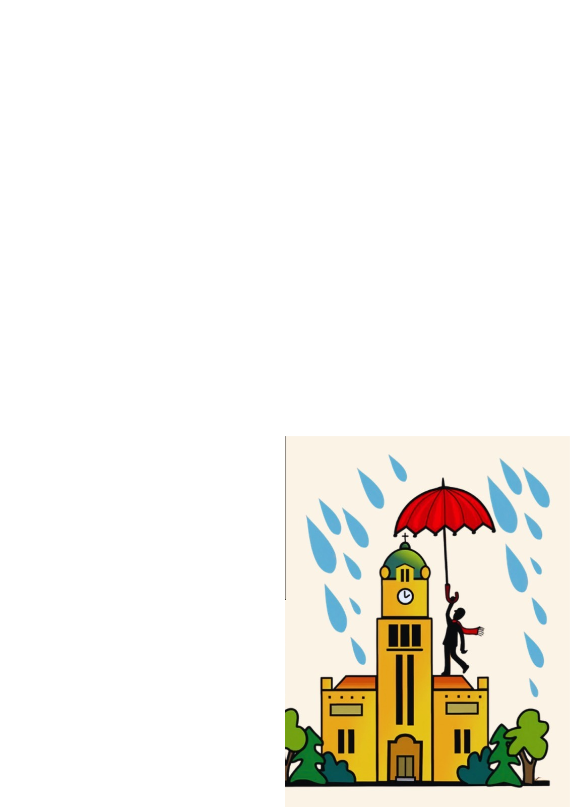

KOSTEL SV. VÁCLAVA
Vraťme život kostelu
Pomoz opravit střechu kostela, který tu je pro všechny. Bezpečný přístav pro duševně nemocné a ty, kteří kráčí po nejtěžších životních cestách.

Pomoz opravit střechu kostela, který tu je pro všechny. Bezpečný přístav pro duševně nemocné a ty, kteří kráčí po nejtěžších životních cestách.